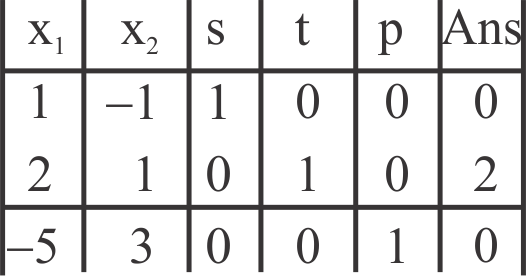
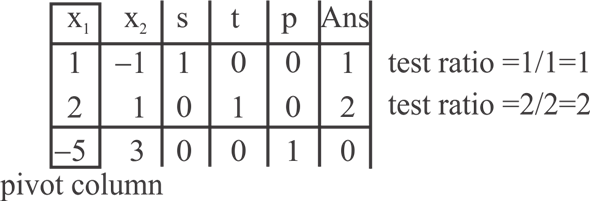
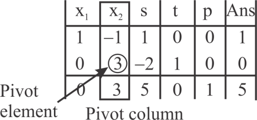
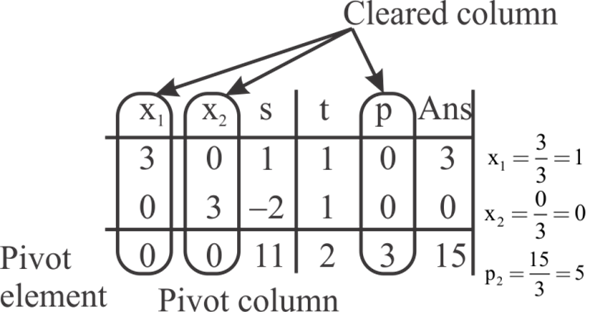

Proof of lemma 29.4
Lemma 29.4 states that if is the standard form of a linear program and B is a set of variables, the slack representation of the same would be uniquely determined.
It is to be proved that the same holds for and.
Proof of Identical Slack Form
It can be proved that for and, the slack form can be determined uniquely, as below.
Consider the proof of lemma 29.4 (refer to section 29.3 of the textbook). For the basis of contradiction, consider the two slack forms for the same set of the basic variables. Suppose that the set of basic variables is B. There must be an identical set of non-basic variables and that is.
Now, the slack form for both of the identical and the non-identical variables can be written as:
First slack form:
… … (6)
… … (7)
Now, replacing the values as and, the second slack form of the same would be as:
… … (8)
… … (9)
Now, subtract the equation (8) from (6) and the equation (9) from (7). This will yield the following result:
This can be further written in the following form:
… … (10)
Now, compare the equation (10) with the one that is given in the lemma 29.3 (refer to the section 29.3 of the textbook).
The comparison yields the following simulations:

The lemma in 29.3 says that the value of  should be 0
and that makes the following to happen:
should be 0
and that makes the following to happen:
That is,
According to this result, the following can be speculated. The left hand side of the equation (6) and (8) is equal. This means the right hand side of the equation would obviously be equal to each other.
Now, the first term of the right hand side of equation (6) and equation (8) have already been proved to be equal to each other. So, the second term of each one of them should be equal to the each other.
That leads to the result:

That would mean:
So, this proves that for the two slack forms if,
Then, the slack form can be uniquely determined.
Simplex Procedure
Effect of call to PIVOT on the value of v :
Consider the smallest subscript rule which is applied to prevent the cycling. Considering the cycles of dictionaries and denote by the symbol.
It is the case of degeneracy of cycle which identifies the same basic viable solution. In the case of pivoting of and the variables may leave or enter. But as the leaving variable is in the basis of, whereas the entering variable does not lay in it, so the leaving variable enters at least once in the basis of the cycle.
Hence it can be concluded that in the cycle the variables, which can enter or leave the cycle at least once in the cycle, exist. These variables are termed as the fickle variables.
Any variable which either leaves or enter the cycles are termed as the fickle variables. And if these variables are non-basic then the values associated with these basic feasible solution is zero.
As the basic viable solution which is identified in the cycle always remains fixed throughout and the fickle variables holds the value as 0 in the cycle.
So consider the dictionary which is associated as,
In the above equation
= leaving variable and
=entering variable
As the is among the fickle variable so and
Consider be a dictionary in which there is as entering the root.
It is visibly seen that the entire dictionary in the cycle signifies the same basic feasible solution so the value of z remains constant.
Now as the value at the left hand side of the equation remains constant, it is obvious that the value of the equation at the right side would remain constant.
There are two terms at the right hand side. The value of the second term would remain constant because if any of the individual variables go up or down, the addition of the set would always be a constant. If that happens, there remains only one more of the terms.
Intuitively, the value of the other term would always be constant and that is v.
So, the value of v would never be decreased when PIVOT is invoked in the line 12 of the procedure.
The input linear program to the PIVOT procedure is of the form.
The following is the PIVOT procedure:
PIVOT
1 //compute the equation’s coefficient for the new basic variable
2 Consider to be a new
 matrix
matrix
3 //calculate the value of
4
5 //loop for all the values of j that are a part of N except {e}
6 for each
7 //calculate the value of
8
9 //update the value of
10
11 //calculate the values for constraints
12 //loop for all the value of i that are a part of B except {l}
13 for each
14 //calculate the value of
15
16 //loop for all the values of j that are a part of set N except {e}
17 for each
18 //calculate the value of
19 
20 //update the value of
21
22 //calculate the new version of objective function and calculate the value of
23
24 //loop for all the values of j that are a part of set N except {e}
25 for each
26 //calculate the value of
27
28 //update the value of
29
30 //calculate the new non-basic variables
31 
32 //calculate the new basic variables
33
34 //return the new slack from of the linear program
35 return
The similarity in the input and the output slack form:
The PIVOT procedure takes slack form of the linear program as input.
The input is represented by the tuple , where l is the index of leaving variable x1 and e is the index of entering variable.
The procedure generates and returns the tuple which is of the form.
Show that the slack forms given to the PIVOT procedure, and those returned by it, are equivalent. Consider the following three conditions:
 denotes the solution which is returned after the call.
denotes the solution which is returned after the call.
1. for each j that belongs to.
2.
3. for each.
It is enough to prove that the above three statements hold, in order to prove that the slack forms given to the PIVOT procedure, and those returned by it, are equivalent.
The first statement holds since the basic solution is available which always sets all the non-basic variables to zero.
In the calculation process, when all the non-basic variables are set to zero in the given constraints, then,
Since , line 4 of
the PIVOT procedure replaces with the
new value to get the new slack form as follows:
, line 4 of
the PIVOT procedure replaces with the
new value to get the new slack form as follows:
Here,
Hence, the second statement is proved.
and
Hence, the three conditions hold.
Therefore, the slack form that procedure PIVOT takes as input, and the slack form that the procedure returns, is same.
Optimal value: Optimal value refers to the desired value of the linear program. In the current case, the optimal value refers to maximizing the problem.
• A problem is a standard maximizing problem, if it has the following characteristics:
• The objective is to find the maximum of the objective function
• All the variables are non-negative
• All the constraints are of linear form and less than equal to 0.
The given problem satisfies all the above characteristics, so it is a standard maximizing problem. To solve it, the following steps are followed:
• Convert the Linear program to a system of linear equations.
• Create the table for the above system of linear equations.
• If pivoting is possible, then proceed to create new tables as long as pivoting can be done.
The final table gives the optimal solution.
Step 1: Convert the linear problem to a system of linear equations:
The characteristic that each constraint is less than equal to 0 helps to convert the given problem into a system of linear equations. This is done by introducing slack variables. The slack variables are added to the inequalities to convert them into equalities.
Even the objective function which is to be maximized is presented here.
The following is the system of linear equations formed:
In the above, the slack variables are.
Step 2: Create table for the system of linear equations:
The table for the system of linear equations is the following:

From the above table, it is observed that there are negative values in the last row.
So, pivoting is possible. By the process of pivoting, the solution keeps improving until no more pivoting can be done.
Step 3: Pivoting:
Pivoting involves first finding out the pivot using the following method:
• Find out the pivot column.
• Find out the pivot.
Pivot column: In last row, find out the value (except in
the Ans column) which is negative and has the highest magnitude.
The column that contains this element is called the pivot column.
So, the pivot column is column .
.
Pivot element: Pivot element has the property of being a values greater than 0. At this point there are two values 1 and 2 which are greater than 0. To break the tie, find out the test ratio.
Test Ratio: It is the ratio of the value in Ans. Column and the candidate for the pivot element.
The table bellows displays the test ratio of each candidate.

It is found out that the test ratio for both the candidates is same. So, any one of it can be chosen as the pivot element. Here 1 in row1 has been chosen as the pivot element.
After finding out the pivot element, the process of pivoting involves performing row operations on the table to create a new table where the pivot column has all values equal to zero except the pivot element.
The following row operations have to be performed:
The new table is the following:

From the above table, it is observed that further pivoting is possible because the last row of the table has a negative value. It is the pivot column. There is only one positive value in that column which is 3. So, the pivot element becomes 3. It has been clearly shown in the table above.
Now perform the required row operations to make the different values of the pivot column zero except the pivot element itself.
The row operations to be performed are the following:
The new table is the following:

There are no negative values in the last row of the table above. Hence, there is no more pivoting to be done. The optimal solution can be found from this table as given in the next step.
Step 4: Calculate the optimal solution:
Every table shown till now has a basic solution associated with it but all those solutions can be improved further to obtain the optimal solution by pivoting. In the previous step, a stage is reached from where no more pivoting is possible, so, this final table gives the optimal solution.
To find the optimal solution, the following steps are followed:
• Find out the cleared column.
• Find out the active variables and inactive variables
• Find out the value of the active variables.
Cleared column: The columns those contain only one non-zero and all others being zero are called cleared columns. In the above table, the cleared columns are the columns under.
The variables are called the active variables and the rest are the inactive variables.
Find the ratio of . This gives
the value of the variable.
. This gives
the value of the variable.
The following table shows the cleared columns, active variables and the ratio.
From the above table, optimal solution is.
Hence, it is seen that the linear program has been maximized using the Simplex method with the maximized value being 5.